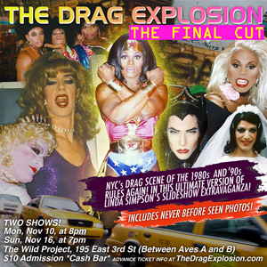

past performance |
|||
|
The Drag Explosion: The Final Cut Drag-queen documentarian Linda Simpson presents a new and ultimate version of her acclaimed slideshow extravaganza, in which she narrates her photos of NYC’s momentous drag scene of the the 1980s and ‘90s. Once again, it’s time to journey back to New York City’s momentous drag scene of the 1980s and ‘90s with drag-queen documentarian Linda Simpson. Starting last year, she has been presenting her photos of the era in a narrated slideshow extravaganza. The latest version is The Drag Explosion: The Final Cut, which is a new edit of all the previous formats, along with never-seen-before photos. The Drag Explosion: The Final Cut will be shown twice in November—on Mon, Nov 10th at 8pm, and Sun, Nov 16th at 7pm—at The Wild Project performance space. Admission is $10. |
 | ||
|
During the years covered by "The Drag Explosion—the late 1980s to the mid ‘90s—Linda Simpson was one of the leading ladies of NYC’s drag scene as a nightlife and media personality. Her vivid and intimate snapshots capture the most colorful characters of their day as they joyfully pushed the boundaries of gender expression. As Linda’s photos reveal, over the course of just several years, drag remarkable transformed from an underground art form into a pop-culture phenomenon. Over the past year, Linda has presented her slideshow at MoMA PS 1, Participant Gallery and the New School. Her photo collection has also received a flurry of media attention, including articles in New York Magazine, Nerve, Paper Magazine and The Huffington Post. In fall of last year, Linda’s debut photo book, PAGES, was published by Peradam, and images from the book were exhibited this spring at ClampArt Gallery in Chelsea. Another book is in progress. The website is TheDragExplosion.com. |
|||
upcoming performances |
|||
 |
|||
| EVQ Film Festival 2018 August 20-25 |
|||
performance archives |
|||
| 2018 | 2017 | 2016 | 2015 |
| 2014 | 2013 | 2012 | 2011 |
| 2010 | 2009 | 2008 | 2007 |